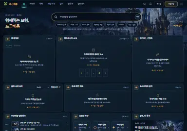
포근해용 UI 갤러리
포근해용의 이전 운영 서비스 화면과 현재 공개 정적 홈, 그리고 준비 중인 미출시 서비스 후보 화면을 기기별, 테마별로 비교해 보실 수 있는 아카이브입니다.
안내: '검증용 가상 자료' 표시가 있는 화면의 캐릭터 정보, 시세, 일정, 수치는 실제 이용자의 개인정보가 포함되지 않은 검증용 가상 데이터이며 실제 운영 사실이 아니에요. 미출시 후보 화면은 현재 운영 서비스에 반영되지 않은 준비 상태입니다.
메인 홈

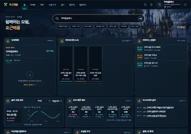

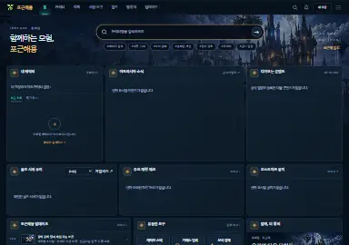

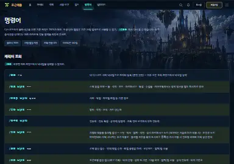

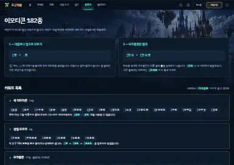

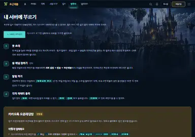

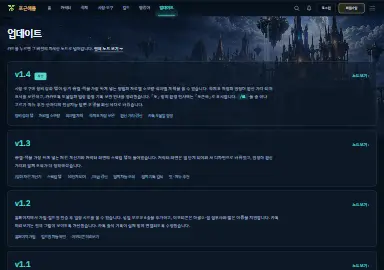

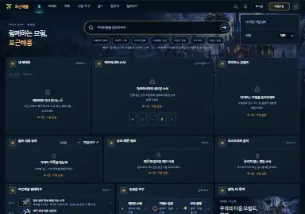

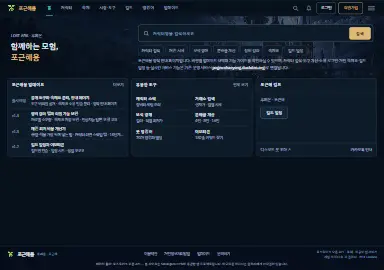

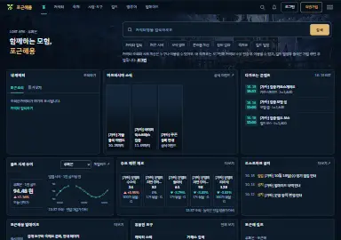
메인 홈 (후보)
실시간 패널이 포함된 새 후보 홈 화면입니다 (운영 미반영).
실서비스 링크 없음

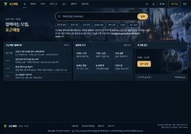
메인 홈 복원 비교안 (후보)
현재 정적 홈에 이전 홈의 성채 일러스트, 알약형 검색, 패널 입체 면, 도구 3×2 타일을 되살려 시각 배치를 비교해 보는 로컬 후보 화면이에요 (공개 홈 미반영, 지운 표어·아이콘 미복원).
실서비스 링크 없음

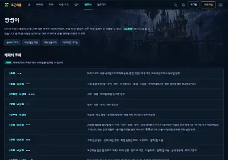

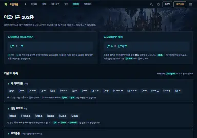

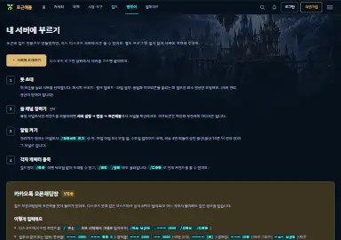

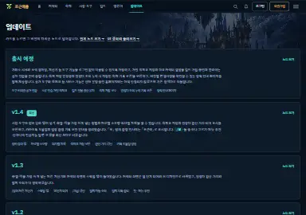

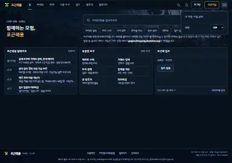
캐릭터

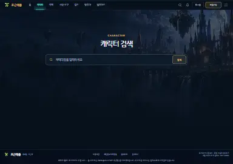

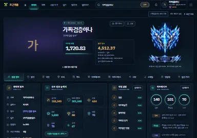

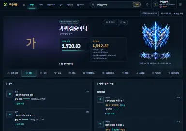

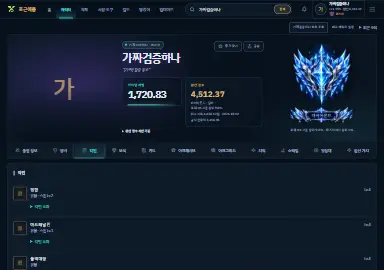

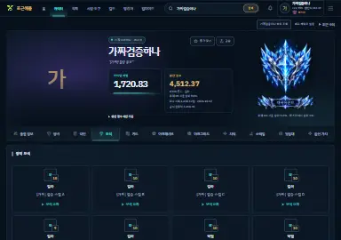

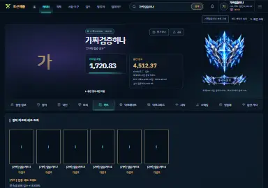

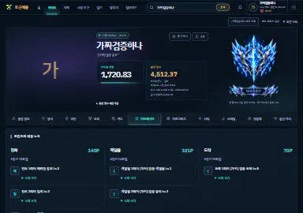

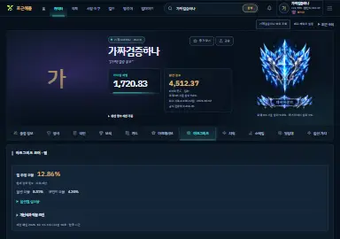

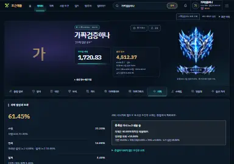

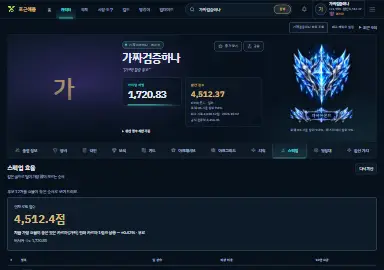

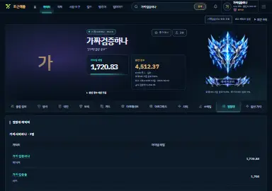

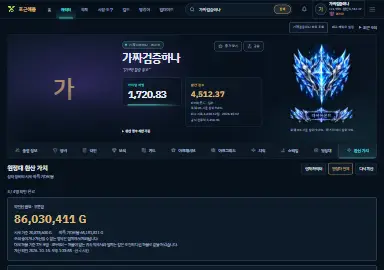

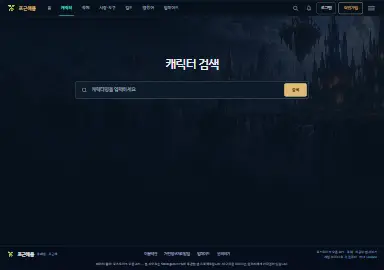
캐릭터 검색 (후보)
비회원 캐릭터 조회를 지원하도록 준비 중인 캐릭터 검색 후보 화면입니다.
실서비스 링크 없음

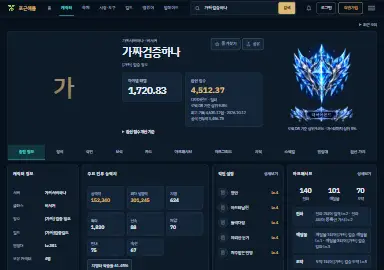
종합 정보 탭 (후보)
레이아웃이 개선된 캐릭터 종합 정보 화면입니다.
실서비스 링크 없음

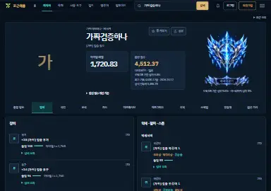
장비 탭 (후보)
연마 단계와 효과를 직관적으로 보여주는 장비 화면입니다.
실서비스 링크 없음

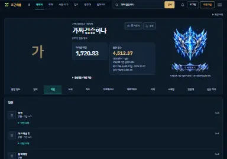
각인 탭 (후보)
각인 활성화 상태를 한눈에 볼 수 있는 각인 화면입니다.
실서비스 링크 없음

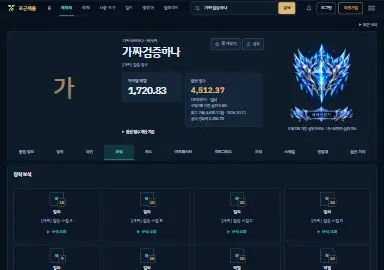
스킬 빌드 탭 (후보)
스킬 배치와 룬을 깔끔하게 정리한 화면입니다.
실서비스 링크 없음

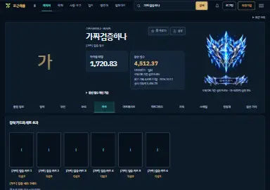
카드 덱 탭 (후보)
달성 단계와 세트 효과를 강조한 카드 화면입니다.
실서비스 링크 없음

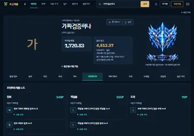
아크 패시브 탭 (후보)
아크 패시브 트리를 보기 쉽게 시각화한 화면입니다.
실서비스 링크 없음

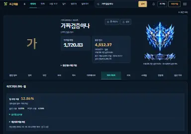
아크 그리드 탭 (후보)
보석 구성과 아크 그리드 효과 점검 화면입니다.
실서비스 링크 없음

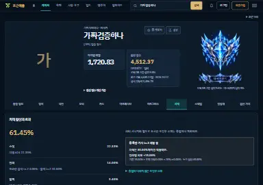
치명타 적중률 탭 (후보)
조건부 치적을 종합 계산해 주는 화면입니다.
실서비스 링크 없음

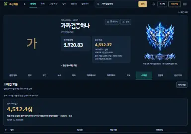
스펙업 가이드 탭 (후보)
골드 대비 성장 효율을 분석하는 화면입니다.
실서비스 링크 없음

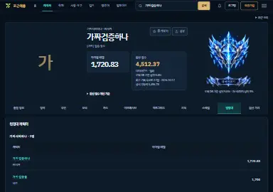
원정대 목록 탭 (후보)
대표 캐릭터와 원정대 캐릭터 목록 화면입니다.
실서비스 링크 없음

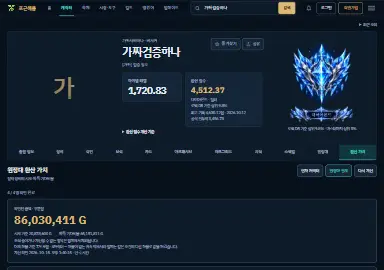
환산 가치 탭 (후보)
시장 시세를 반영한 종합 가치 평가 화면입니다.
실서비스 링크 없음
시장 · 도구


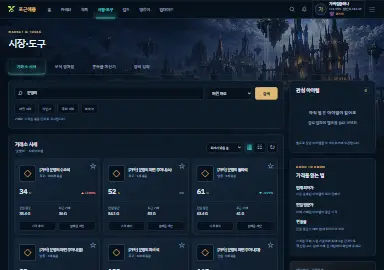


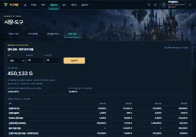

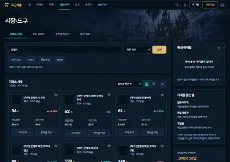
거래소 시세 (후보)
비회원 시세 조회를 지원하도록 준비 중인 거래소 시세 검색 후보 화면입니다.
실서비스 링크 없음

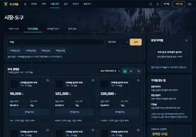
보석 시세 (후보)
비회원 보석 시세 조회를 지원하도록 준비 중인 보석 경매장 최저가 후보 화면입니다.
실서비스 링크 없음

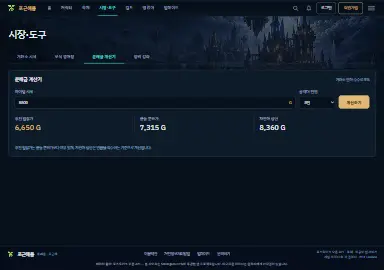
분배금 계산기 (후보)
파티 인원별 최적 입찰가 계산 화면입니다.
실서비스 링크 없음

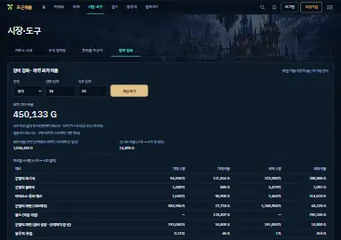
장비 강화 계산기 (후보)
숨결과 장인의 기운 투입 효율 분석 화면입니다.
실서비스 링크 없음
숙제표


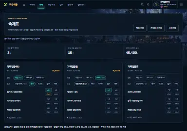

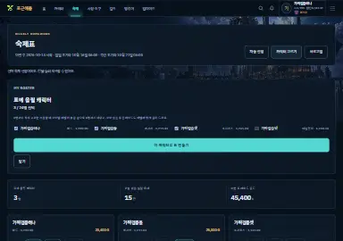

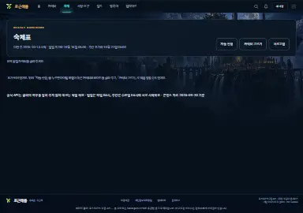

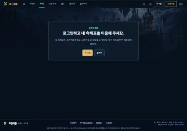
숙제표 접근 안내 (후보)
개인 숙제 이용을 위한 소유 인증 안내 화면입니다.
실서비스 링크 없음

캐릭터 소유 인증 대기 (후보)
캐릭터 소유 인증 전 표시되는 숙제표 안내 화면입니다.
실서비스 링크 없음

주간 숙제표 (후보)
개인 숙제 보존과 직렬 저장이 보강된 숙제표입니다.
실서비스 링크 없음

숙제 캐릭터 선택 (후보)
원정대 숙제 관리 캐릭터 선택 창입니다.
실서비스 링크 없음

숙제표 빈 상태 (후보)
원정대 데이터가 비어 있을 때의 화면을 브라우저에서 시연한 후보 숙제 화면입니다.
실서비스 링크 없음